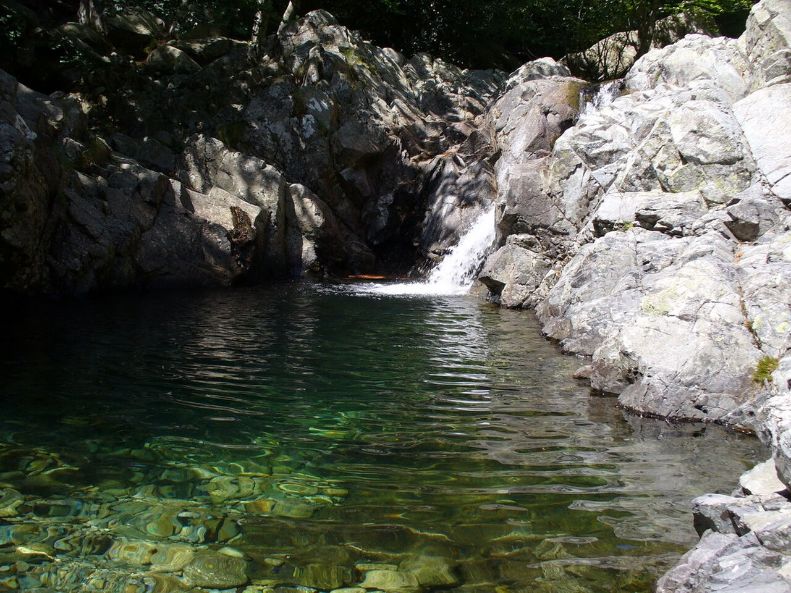
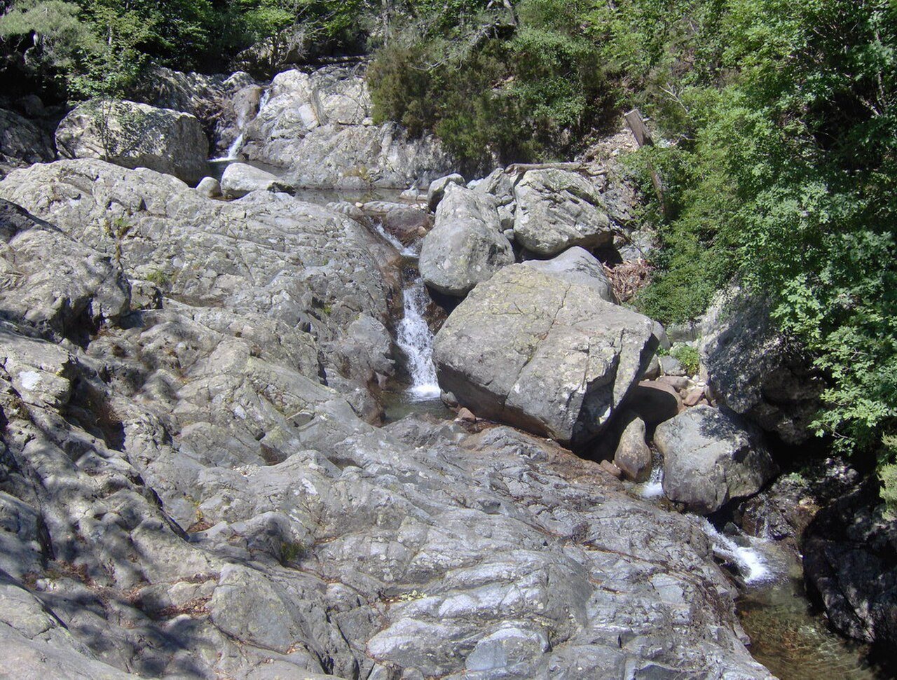
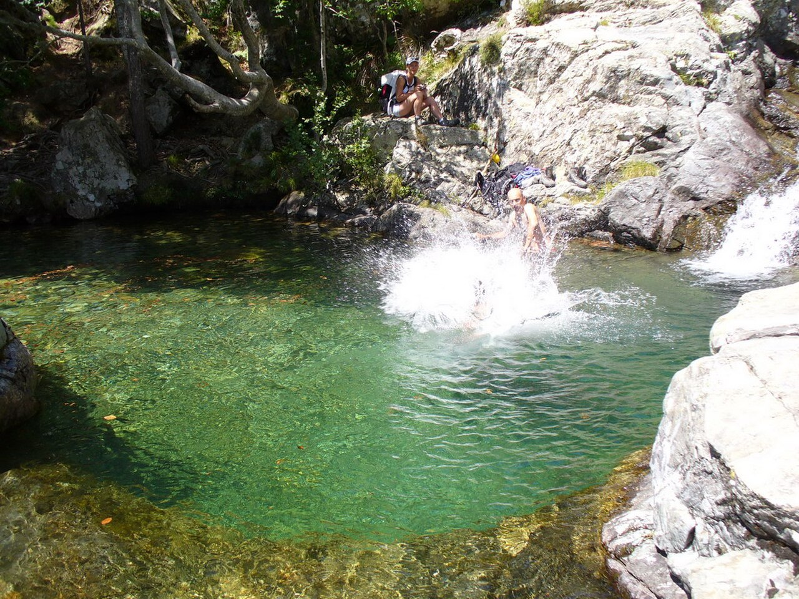
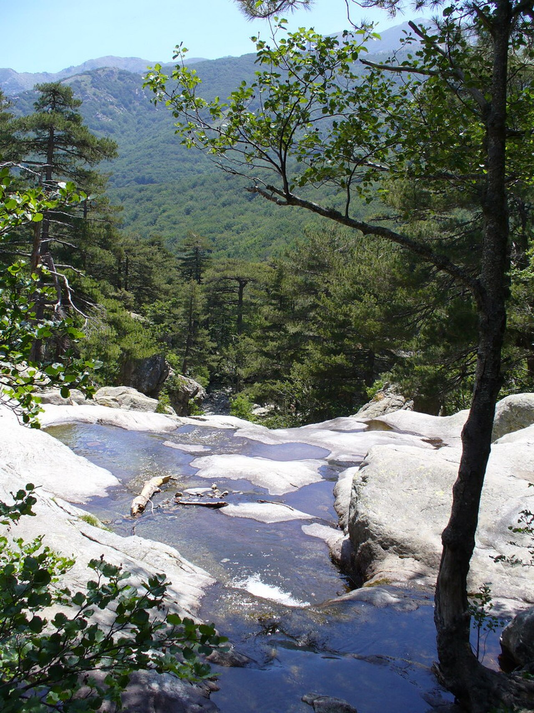
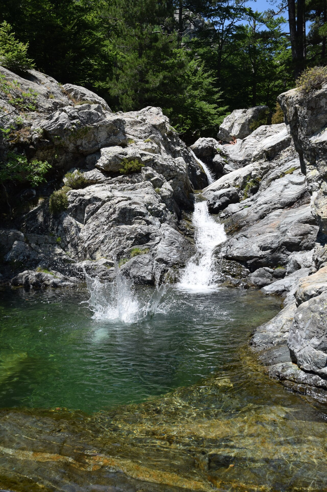
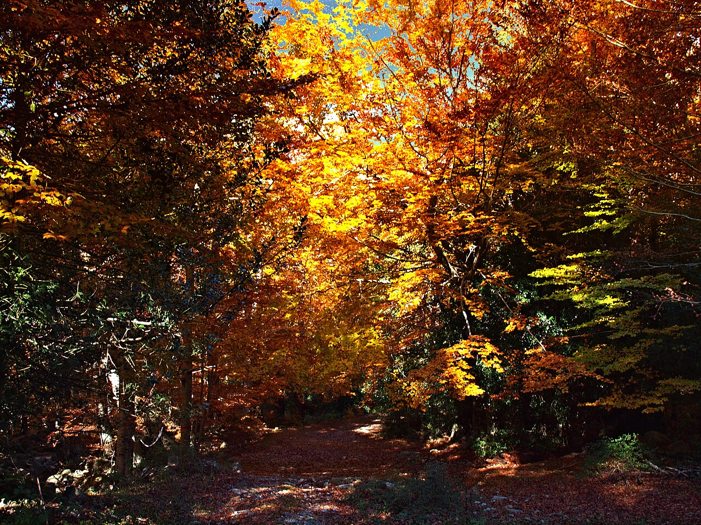

← faites défiler les photos →
🏆 Notre coup de cœur
1. Cascade des Anglais
★★★★★ Vizzavona — torrent de l'Agnone, au pied du Monte d'Oro
🚗 ≈ 1h05 des Sanguinaires
🛣️ Route facile (RN193)
🅿️ Parking gratuit
🥾 30–45 min de marche facile
🏊 Baignade oui
La valeur sûre absolue depuis Ajaccio : une succession de chutes et de vasques turquoise creusées dans le granit blanc, dans une hêtraie fraîche et ombragée sur le tracé du GR20. C'est le spot qui coche toutes les cases : visuellement superbe, baignade possible (eau vivifiante, 14–17 °C l'été), et le seul de la liste qui garde un vrai débit même en août.
Route RN193 direction Corte/Bastia jusqu'à Vizzavona : nationale large et roulante, aucun passage difficile. C'est la route la plus simple de toute la sélection.
Parking Gratuit à la gare de Vizzavona ou au hameau de La Foce (départ le plus court). Sature vite en été → viser avant 10h.
Marche ≈ 2,5 km, sentier balisé, facile et à l'ombre. Premières vasques après 30–45 min. Baskets suffisent.
Sur place Buvette/restaurant à Vizzavona. Possibilité d'y aller en train depuis Ajaccio (ligne Ajaccio–Bastia) si vous voulez éviter la voiture !